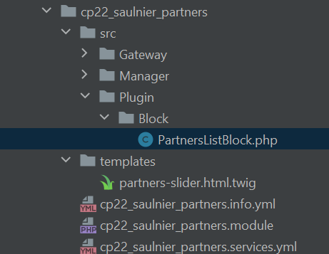
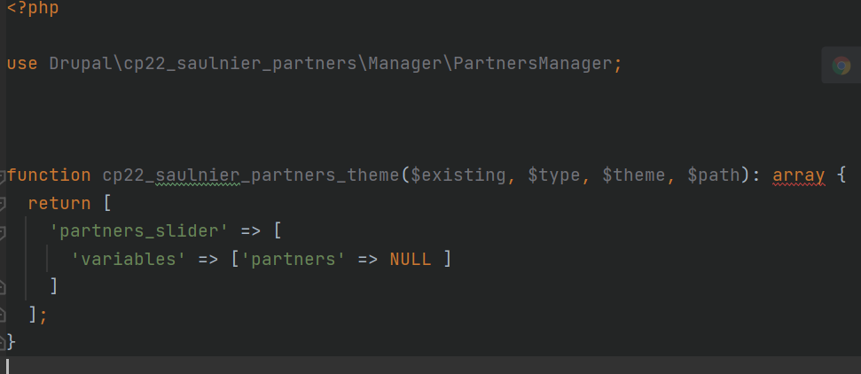
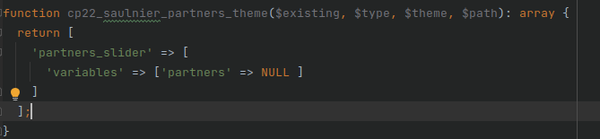
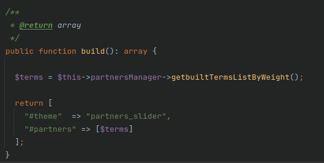
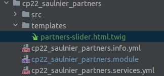
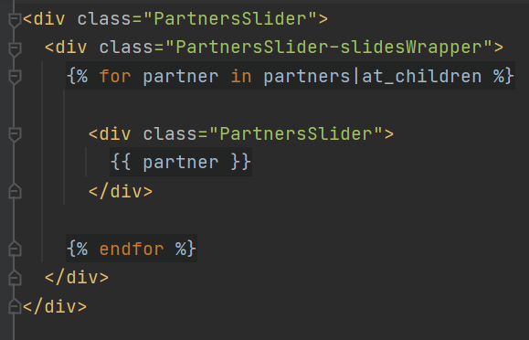
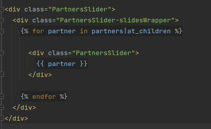

Procédure de création
Ici on va implémenter le thème dans un module, le cp22_saulnier_partners
On peut constater qu'il s'agit d'un module classique déjà déclaré qui possède une logique de manager, gateway...
Implantation du hook dans le ".module" ou ".theme"
Amélioration du fichier ".module" avec le hook cp22_saulnier_partners_theme
function cp22_saulnier_partners_theme($existing, $type, $theme, $path): array {
return [
'partners_slider' => [
'variables' => ['partners' => NULL ]
]
];
}
Le hook renvoi un render array composé de la div du container principal contenant une variable celle de partners initialisée à null. Elle sera agrémenté dans le build du Block Plugin partners
Pour l'architecture du module
Créer un template custom drush cr
La fonction build dans le Plugin/Block
On construit notre build du block avec un render array
Ici grâce au block on peut créer cette fonction build en la nourrissant de ce que l'on va récupérer dans le manager et gateway.
Ici on peut donc construire notre build en renvoyer :
- le nom de la page twig que drupal devra retrouver :
"#theme" => "partners_slider"
- le nom de la variable qui comprendra nos éléments (sous forme de tableau):
"#partners" => [$terms]
Le template twig
Après toute la construction de la logique et des différentes éléments, on peut construire la page twig qui rendra les éléments
Architecture
Création du dossier templates
Création du fichier partners-slider.html.twig comme définit dans le hook_theme et le build
Pour construire le template
On verifie sur le navigateur le nom qui peut etre adapté
on appelle la variable dans le template
dans le build bien penser à mettre la variable dans un tableau
Creation du twig
Le twig se compose d'une div principale PartnersSlider comme défini dans les build et module
elle contient une boucle for qui va itérer sur la variable partners (définie dans le build)
On lui ajoute une classe pour le css et on insère la variable
Voir comment écrire les classes On cree des wrappers pour insérer les élements et on utilise une boucle for avec un pipe at_children et on insère la variable à l'intérieur
Pour les images
On doit faire attention à bien regarder la taille des images avec ls mises à l'échelles
par exemple 128 de haut et 300 de large pour la mise à l'échelle. On doit verifier la plus grande et la plus petite image et le rendu visuel de la page